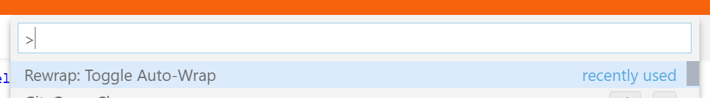
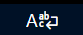
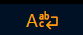

Configuration
This is for VS Code. Go here for configuration in Visual Studio.
Configure though the settings UI (
All settings can be set per language/file type (see below).
Summary
| Setting | Json ID | Values (default first) |
|---|---|---|
| Auto Wrap: Enabled | false | true | |
| Auto Wrap: Notification | "icon" | "text" | |
| Double Sentence Spacing | false | true | |
| Whole Comment | true | false | |
| Wrapping Column | <number> |
Wrapping column
The recommended way to set a wrapping column is to use a ruler (see below), which also
gives a visual indication. If you don't want to do that, then you can use the
{
// Wraps after 72 characters
"rewrap.wrappingColumn": 72
}
If neither this nor any rulers are set, then VS Code's
Wrapping to rulers
To enable wrapping to rulers,
If you have a ruler set up in VS Code, Rewrap will wrap to that ruler. If you have multiple rulers, you can choose which ruler to wrap to while editing.

Just press Alt+Q multiple times to wrap to each ruler in turn. The ruler chosen is then remembered for that document for the rest of the session. It cycles through the rulers in the order in which they appear in settings; so if you have a most commonly used ruler, you probably want to put that first.
Whole Comment
"rewrap.wholeComment": true`
When this is true, Rewrap will wrap a whole comment block when a text cursor is inside
it.

But when set to false, Rewrap will only wrap that paragraph within the comment.

(Here the second paragraph is not wrapped)
Note: This setting only affects empty selections. You can always manually select the lines to wrap.
Double Sentence Spacing
"rewrap.doubleSentenceSpacing": false
If enabled, whenever a paragraph is wrapped, for any lines that end in ".", "?" or "!", two spaces will be added after that sentence when the paragraph is rewrapped. This is not enabled by default.
(details)
Auto-wrap
Auto-wrap works like the auto-fill mode in Emacs. When pressing <space> or <enter> after the cursor is past the wrapping column, that line is wrapped onto the next.

Like in the Emacs function, auto-wrap does not attempt to re-flow the entire paragraph; it
only adds a break in the current line. It's handy when typing new text, but won't
automatically fix a paragraph after inserting/removing text. For this you can always do a
standard alt+q after making edits.
Enabling
Auto-wrap is disabled by default, but can be enabled with the
Even when enabled, it will only activate within comments in code files, not on code lines, so it's usually ok to leave it enabled.
To temporarily enable or disable auto-wrap for the current document, you can use the

There's no default keybinding for the toggle command, but you can add one, eg
shift+alt+q, by binding to the command ID
Notification
To help keep track of when auto-wrap is on or off, there is a small (optional, but on by default) icon/notification in the right of the statusbar, that shows the auto-wrap state for the current document. It has 4 states:
|  (normal) | on (enabled in settings) |
| off (disabled in settings) | |
|  (orange) | temporarily enabled (from toggle command) |
| temporarily disabled (from toggle command) |
Hovering over this icon will give more information.
If you don't like the icon, you can hide
it, or
change the

Language-specific settings
See also the VS Code documentation.
This example sets the wrapping at column 72 for Python, with doubleSentenceSpacing on, and the wrapping column at 90 for Javascript.
{
"[python]": {
"editor.rulers": [72, 79],
"rewrap.doubleSentenceSpacing": true
},
"[javascript]": {
"editor.rulers": [90]
}
}
VS Code has a helper command for adding language sections to your settings file: press F1
and search for Preferences: Configure Language Specific Settings....
Note: Be aware that a global
Keybindings
Rewrap's main command has the default keybinding Alt+Q. If you want to change it to
something else, add something like this to your keybindings.json
file. For example for Ctrl+Shift+Q:
{
"key": "ctrl+shift+q", "command": "rewrap.rewrapComment"
}
There are two other commands you can add keybindings for (eg alt+shift+q):
| Command | ID |
|---|---|
| "Wrap Comment / Text at column..." | |
| "Toggle Auto-Wrap for Current Document" |